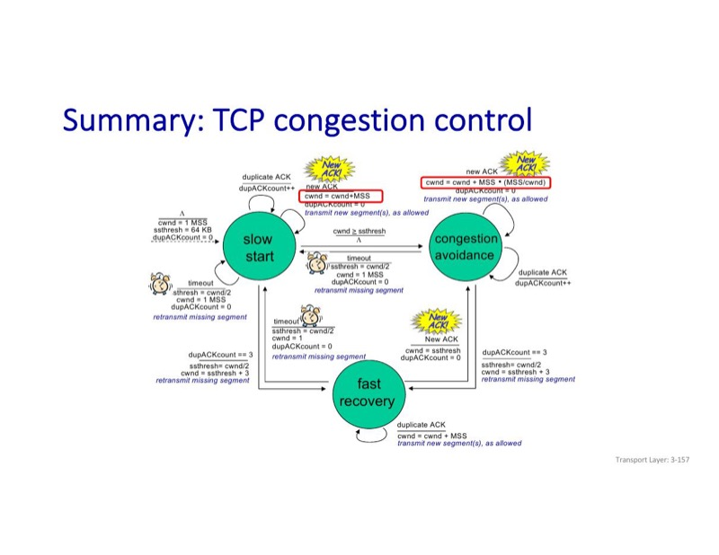
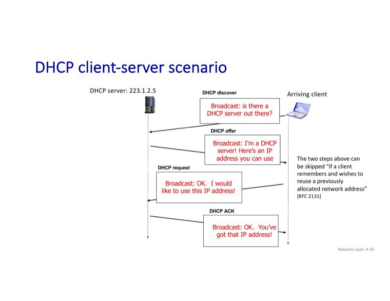
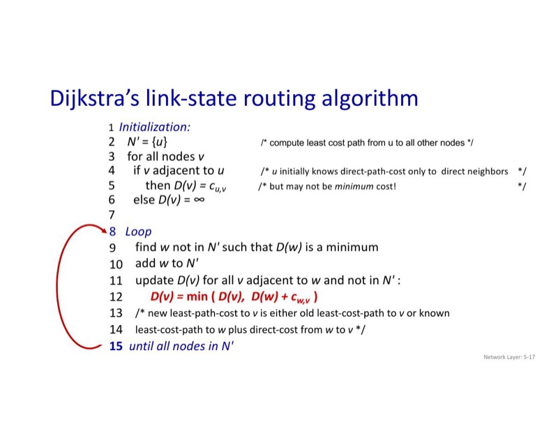
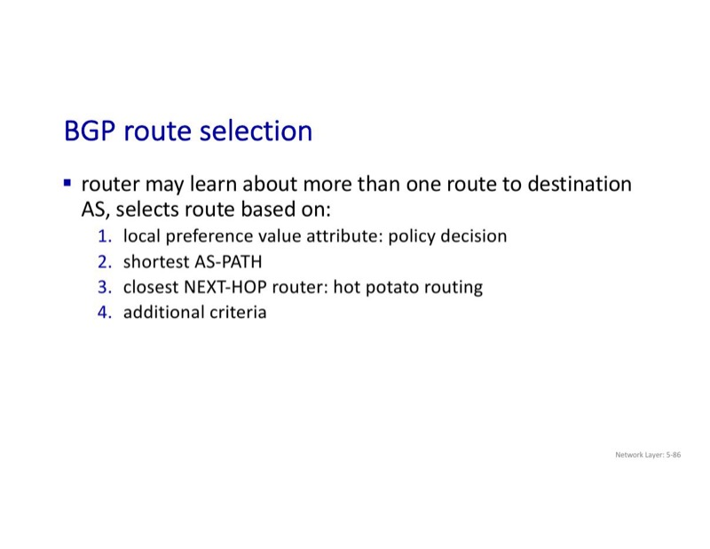
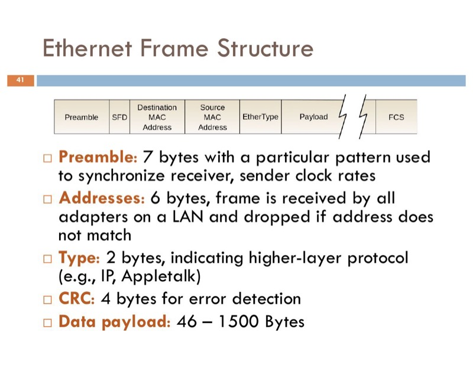
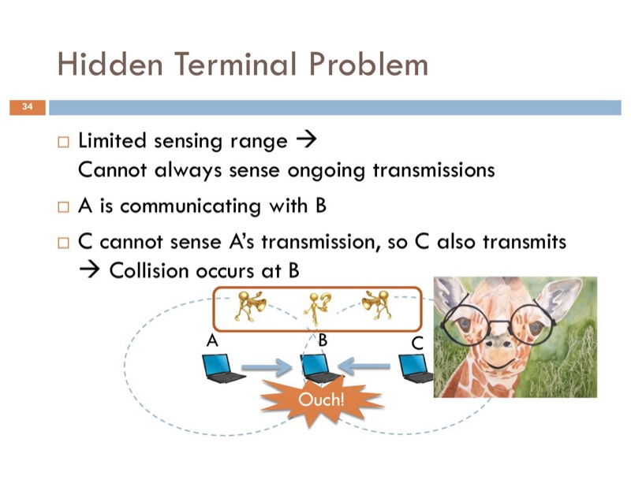
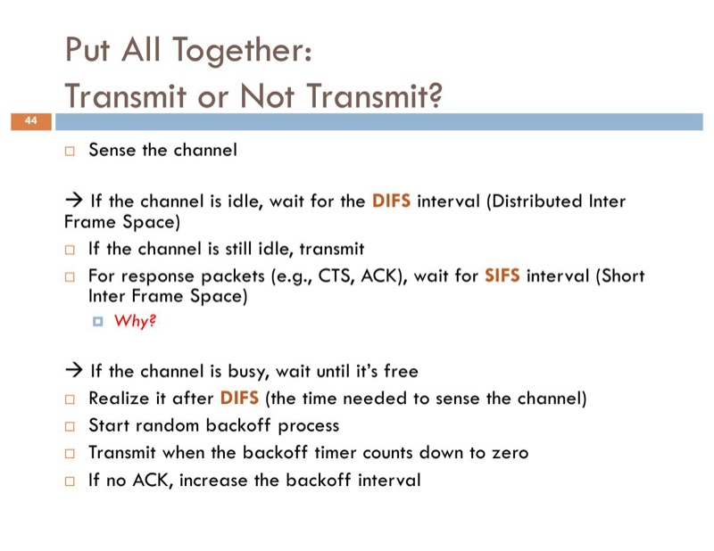

Encapsulation: lower layer wraps upper PDU. Demux up: Ethertype → IP proto → port → app.
Transport map: HTTP / SMTP / IMAP / FTP / BGP / BitTorrent → TCP · DNS (default) / DHCP / RTP → UDP · OSPF / ICMP → raw IP · ARP → link
| Circuit ✅ | Circuit ❌ |
|---|---|
| Guaranteed BW · simple abstraction · simple forwarding · low per-pkt overhead | Wasted BW on bursty · blocked connections · set-up delay · per-conn state |
vs Packet: great for bursty (resource sharing, no setup); congestion → buffer overflow → delay/loss. Internet picks packet.
| Client-Server | P2P | |
|---|---|---|
| Server | always-on, fixed IP | none |
| Hosting | data center | any end systems, direct |
| Clients | contact server | peers serve each other |
| Scale | limited by server | self-scaling — each peer adds capacity |
| Ex. | HTTP, DNS | BitTorrent |
Self-scaling: N peers join → upload capacity grows N×
If-Modified-Since → 304 (no body) if same, else 200 + body| UDP | TCP | |
|---|---|---|
| conn | none | 3WHS |
| reliable | no | yes |
| order | no | yes |
| flow ctrl | no | rwnd |
| cong ctrl | no | AIMD |
| hdr | 8 B | 20 B |
| uses | DNS, RTP, DHCP | HTTP, SSH |
Close = 4-way (FIN/ACK each dir). TIME_WAIT 2·MSL → avoid stray pkts in next conn.
Map: checksum (1) · ACK (1, 3) · seq # (2, 5) · timer (3, 4) · rcvr buffer (5)
| GBN | SR | |
|---|---|---|
| ACK | cumulative | per-packet |
| Loss | resend window | resend just lost |
| Data loss heavy | bad | good |
| ACK loss heavy | good | bad (timeout) |
| Buf at rcvr | none | required |
Rule: data-loss heavy → SR; ACK-loss heavy → GBN. Always write the reason (otherwise lose marks). SR window ≤ N/2 (seq space).

Loss detection → recovery: Timeout ⇒ cwnd=1 + slow start; 3 dup ACK ⇒ cwnd/=2 + fast recovery → CA.
Trap: FR + new ACK → CA, NOT slow start.
| End-end | Net-assisted | |
|---|---|---|
| Signal | none from net | router signals host |
| Detect | infer from loss/delay | router tells (level/rate) |
| Ex. | TCP (default) | ECN, ATM, DECbit |
Internet: end-end (loss-based) + optional ECN.
| DP | CP |
|---|---|
| Per-router, local | Network-wide |
| HW, ns | SW, ms |
| Match + action | Compute paths |
| Forwarding | Routing |
| Flow table | OSPF / BGP |
Classic: per-router CP. SDN: CP centralized in controller; switches just run FTs (DP).
| Arch | BW | Loss | Order | Timing |
|---|---|---|---|---|
| Internet | best-effort | no | no | no |
| ATM CBR | const | yes | yes | yes |
| ATM ABR | min guar | no | yes | no |
| IntServ | yes | yes | yes | yes |
| DiffServ | maybe | maybe | maybe | no |
Best-effort won: simple → widely deployed · packet-switching efficient for bursty · survives failures.

Also returns: default gateway · DNS · netmask · lease
| v4 | v6 | |
|---|---|---|
| addr | 32 b | 128 b |
| hdr | 20+ B | 40 B fixed |
| checksum | yes | no |
| fragment | at routers | endpoints only |
| flow label | no | yes |
Tunneling: v6 pkt as payload in v4 pkt across v4-only segment. Logical: looks like direct v6 link · Physical: v4 routers only see v4 hdr
"Big mouth": flood everyone. Global view per node. Used by OSPF, IS-IS.
"Whisper": only tell neighbors. Local view per node. BGP is a path-vector variant.
| LS (Big mouth) | DV (Whisper) | |
|---|---|---|
| view | global | local |
| flood | all | neighbors only |
| algo | Dijkstra | Bellman-Ford |
| msgs | O(n²) | varies |
| conv | fast (may oscillate) | slow (CTI) |
| error | local | propagates |
| ex | OSPF, IS-IS | (legacy) |

O(n²) · heap → O(n log n). Msg complexity O(n²).

⚠️ Trap: BGP does NOT always pick shortest AS-PATH — it is policy-based. If a neighbor AS refuses to forward, traffic must take a longer path.
Def: For a packet headed to another AS, the router forwards it to the border router with minimum intra-AS cost ("throw the hot potato out fast").
Why: each AS only minimizes its own traffic cost, ignoring how far the packet travels in other ASes.
→ Network shifts from purpose-built hardware to commodity switches + a centralized programmable controller.
CRC detects all burst errors ≤ r bits.
G=1001, D=101011, r=3:
D·2^r = 101011000
Divide mod-2 (XOR) by 1001:
101011000
⊕ 1001
--------
011 → bring next bits ...
Remainder R = 110 (3 bits)
Transmit: 101011 110
| Type | Examples |
|---|---|
| Channel partition | TDMA · FDMA · CDMA |
| Taking turns | polling · token |
| Random access | ALOHA · CSMA · CSMA/CD · CSMA/CA |
Key diff: wireless can't listen while TX (own TX dominates RX) → no detection, must avoid.

Modern Ethernet = switched, point-to-point, full duplex, no CSMA/CD.
| MAC | IP | |
|---|---|---|
| Layer | Data Link | Network |
| Length | 48 b (6 B) | 32 b (v4) / 128 b (v6) |
| Assignment | burned into NIC by vendor (OUI + serial) | DHCP / static |
| Scope | unique within LAN | globally unique (except NAT) |
| Rewritten? | changes per hop (src/dst MAC rewritten) | end-to-end, unchanged |
| Analogy | SSN / ID number | postal address |
| Router | Switch | |
|---|---|---|
| layer | Network | Data Link |
| addr | IP | MAC |
| table | routing alg | self-learn |
| scope | cross-net | single LAN |
| TTL | −1 | untouched |
These two drive all wireless MAC design.
Real env: PL(d) = PL(d₀) + 10α · log(d/d₀) + X. α = 2 free · 2.7–3.5 urban · 4–6 indoor.
Key: CSMA = sender senses channel — but collision = at receiver.
Fix: shift decision from sender → receiver. ACK (CSMA/CA) + RTS/CTS (receiver claims channel).

Def: node X outside sender A's range but inside receiver B's interference range. X hears idle → sends → collides w/ A at B.
Fixes: CSMA/CA (ACK) + RTS/CTS (NAV). See those sections.
Mnemonic: hidden = sender-OUT + recv-IN (should stop, doesn't). Exposed = sender-IN + target-OUT (defers, didn't need to).

No collision detection: TX deafens own RX.
| Std | Band | Rate |
|---|---|---|
| b | 2.4 G | 11 M |
| a / g | 5 / 2.4 G | 54 M |
| n | 2.4 / 5 G | ~600 M (MIMO) |
| ac (WiFi 5) | 5 G | > 1 G |
| ax (WiFi 6) | 2.4 / 5 G | ~14 G |
2.4 G non-overlap channels: 1, 6, 11 (22 MHz each).
| Symbol | = | seconds |
|---|---|---|
| 1 s | = | 10⁰ |
| 1 ms | = | 10⁻³ |
| 1 μs | = | 10⁻⁶ |
| 1 ns | = | 10⁻⁹ |
| SI (10ⁿ) | Binary (2ⁿ) | |
|---|---|---|
| 1 KB | 10³ B | 2¹⁰ = 1024 B |
| 1 MB | 10⁶ B | 2²⁰ B |
| 1 GB | 10⁹ B | 2³⁰ B |
| 1 TB | 10¹² B | 2⁴⁰ B |
Networking uses SI (base-10). Storage often binary.
| Unit | bps |
|---|---|
| 1 bps | 1 |
| 1 Kbps | 10³ |
| 1 Mbps | 10⁶ |
| 1 Gbps | 10⁹ |
| 1 Tbps | 10¹² |
| Bytes | Bits |
|---|---|
| 1 KB | 8 Kb |
| 1 MB | 8 Mb |
| 1 GB | 8 Gb |
| 500 B | 4 Kb = 4000 b |
| 400 B | 3.2 Kb = 3200 b |
| 2 Kb | 250 B |
| Unit | = meters |
|---|---|
| 1 km | 1000 m = 10³ |
| 1 cm | 10⁻² m |
| 1 mm | 10⁻³ m |
| 1 μm | 10⁻⁶ m |
1 mile ≈ 1.609 km (rarely needed)
| Path | RTT |
|---|---|
| Localhost | < 0.1 ms |
| Same datacenter | 0.5–1 ms |
| Same city | 5–10 ms |
| US coast-to-coast | 60–80 ms |
| US ↔ Europe | 80–120 ms |
| US ↔ Asia | 150–250 ms |
| Satellite (GEO) | ~500 ms |
| 2ⁿ | Value |
|---|---|
| 2⁸ | 256 |
| 2¹⁰ | 1024 ≈ 10³ |
| 2¹⁶ | 65 536 ≈ 6.5·10⁴ |
| 2²⁰ | 1 048 576 ≈ 10⁶ |
| 2³² | ≈ 4.3·10⁹ (IPv4) |
| 2¹²⁸ | ~3.4·10³⁸ (IPv6) |
| /x | Hosts (2^(32−x)) | Notes |
|---|---|---|
| /8 | 2²⁴ ≈ 16M | old Class A |
| /16 | 2¹⁶ ≈ 65K | old Class B |
| /20 | 2¹² = 4096 | mid example |
| /23 | 2⁹ = 512 | |
| /24 | 2⁸ = 256 | old Class C |
| /28 | 2⁴ = 16 | |
| /30 | 2² = 4 | point-to-point |
| /x | Mask |
|---|---|
| /8 | 255.0.0.0 |
| /16 | 255.255.0.0 |
| /20 | 255.255.240.0 |
| /24 | 255.255.255.0 |
| /28 | 255.255.255.240 |
| /30 | 255.255.255.252 |
Octet pattern: 128, 192, 224, 240, 248, 252, 254, 255
| Hex | Bin |
|---|---|
| 0 | 0000 |
| 1 | 0001 |
| 2 | 0010 |
| 4 | 0100 |
| 8 | 1000 |
| A | 1010 |
| C | 1100 |
| F | 1111 |
e.g. MAC 00-15-C5 = 0x0015C5
| Prefix | Symbol | Value |
|---|---|---|
| nano | n | 10⁻⁹ |
| micro | μ | 10⁻⁶ |
| milli | m | 10⁻³ |
| kilo | k/K | 10³ |
| mega | M | 10⁶ |
| giga | G | 10⁹ |
| tera | T | 10¹² |